1
Electrical Engineering · Double-Degree Program
I am expanding my engineering knowledge through coursework in artificial neural networks, image processing, collaborative robotics, and microcontrollers.
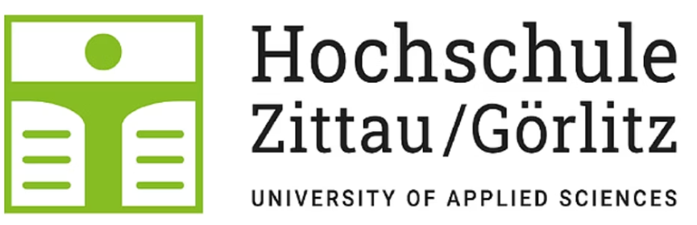
Mechatronics & Electrical Engineering Student
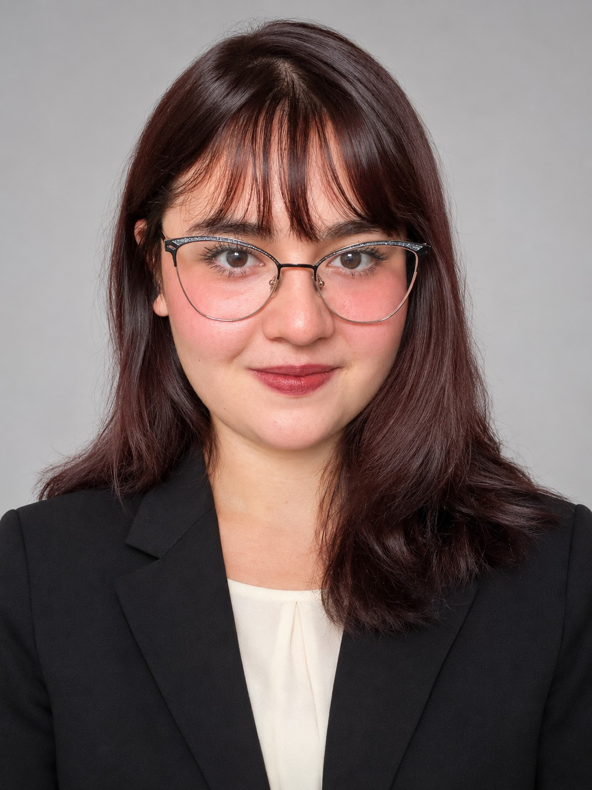
I am a Mechatronics Engineering student at Tecnológico de Monterrey, Mexico, currently pursuing a double degree in Electrical Engineering at Hochschule Zittau/Görlitz, Germany. Based in Zittau, I focus on integrating mechanical design, electronics, and control to develop and evaluate engineering systems.
I develop robotic simulations, vision-guided pick-and-place systems, and control solutions for electromechanical prototypes. My projects combine mechanical design, electronics, and programming to address manufacturing, motion control, and temperature regulation challenges.
I am seeking an engineering internship in Germany starting in March 2027 and I am particularly interested in combining these areas to contribute to real manufacturing processes, and continue developing my technical skills.
Studying engineering in Mexico and Germany has given me the opportunity to learn in different academic and cultural environments. Through university projects, I am developing practical skills in mechanical design, robotics, computer vision, and control, while learning to collaborate across disciplines.
I am expanding my engineering knowledge through coursework in artificial neural networks, image processing, collaborative robotics, and microcontrollers.

My studies combine mechanics, electronics, programming, and control, with practical team projects in robotics and manufacturing automation.
A selection of academic work exploring manufacturing automation, robotic design, computer vision, and control systems. Each project highlights the engineering challenge, my individual contribution, and the tools used.
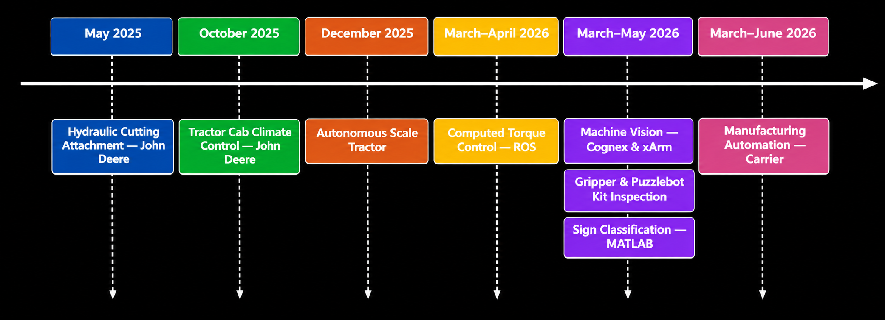
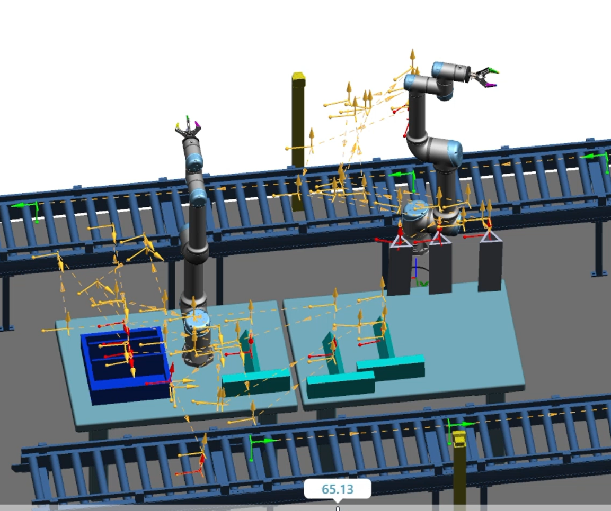
Developed conveyor and UR5e robot sequences in Siemens Process Simulate, assessing motion, reach, and cell layout to support an academic proposal for automated subassembly operations.
GO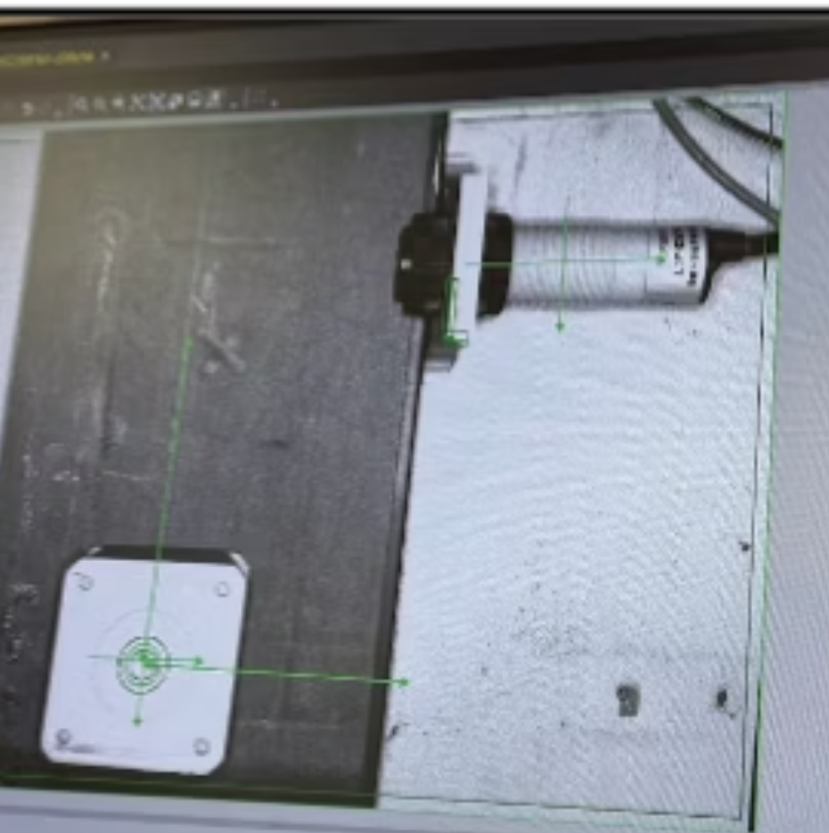
Configured Cognex edge detection and measurement, calibrated pixels to millimetres, and helped align camera and robot coordinates for an xArm robotic pick and place application.
GO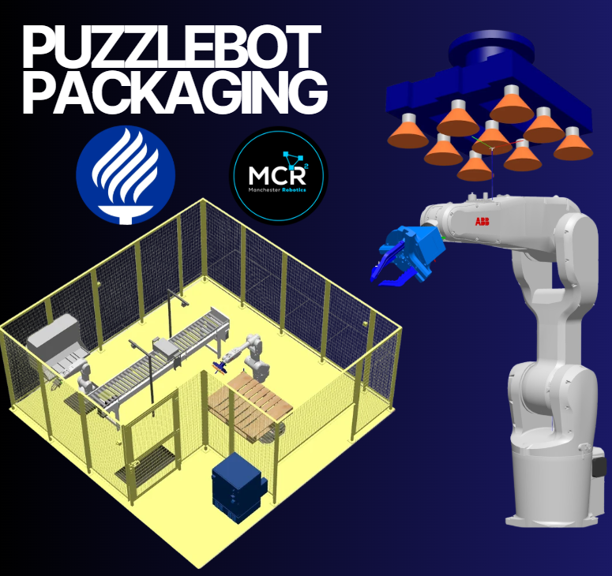
Designed a gripper in SolidWorks, implemented Cognex inspections for components, labels, and QR codes, and prepared the proposal’s bill of materials and return on investment.
GO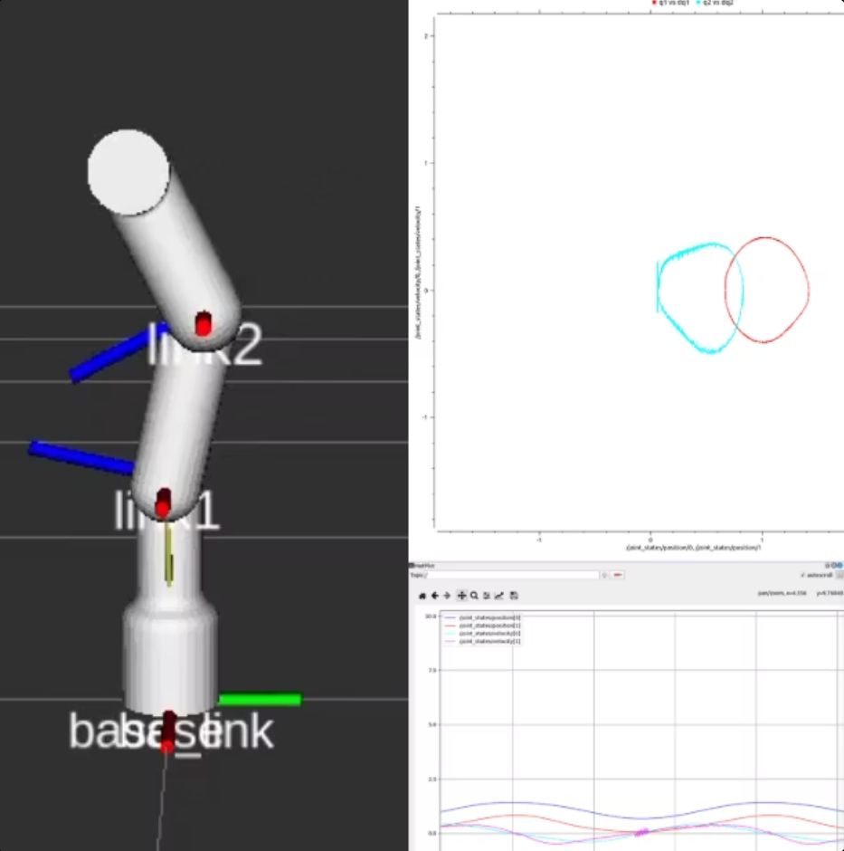
Implemented computed torque control in ROS for a two-link robot, tuned gains, and evaluated tracking under changing trajectories and torque limits.
GO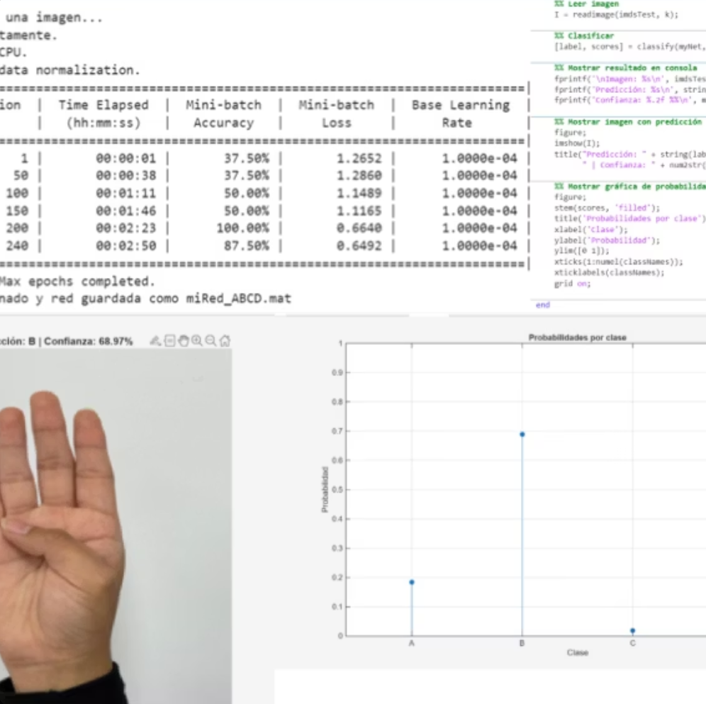
Adapted AlexNet in MATLAB using transfer learning to classify signs A–D, augmented training images, and evaluated predictions and class probabilities using additional hand images during individual prediction tests.
GO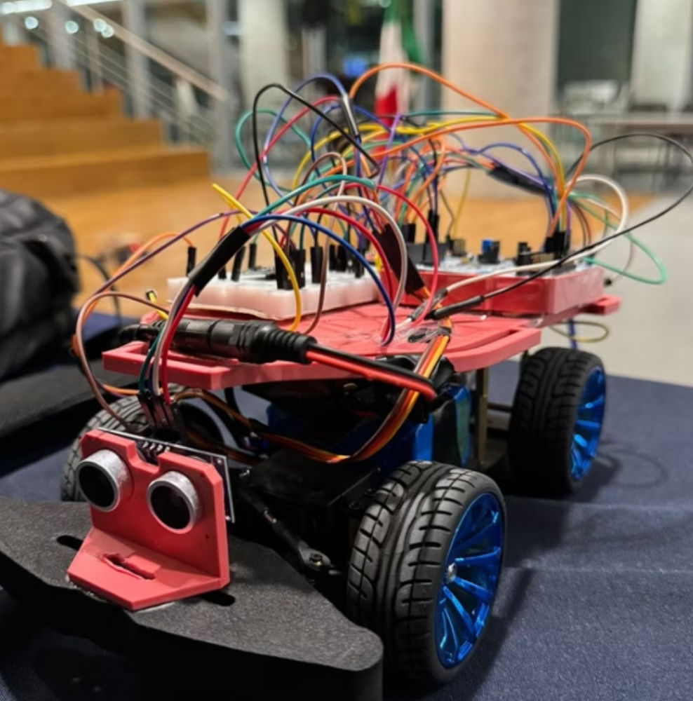
Collaborated on an STM32 vehicle prototype integrating PID speed regulation, encoder feedback, inertial steering correction, ultrasonic obstacle detection, and Bluetooth communication for commands and telemetry.
GO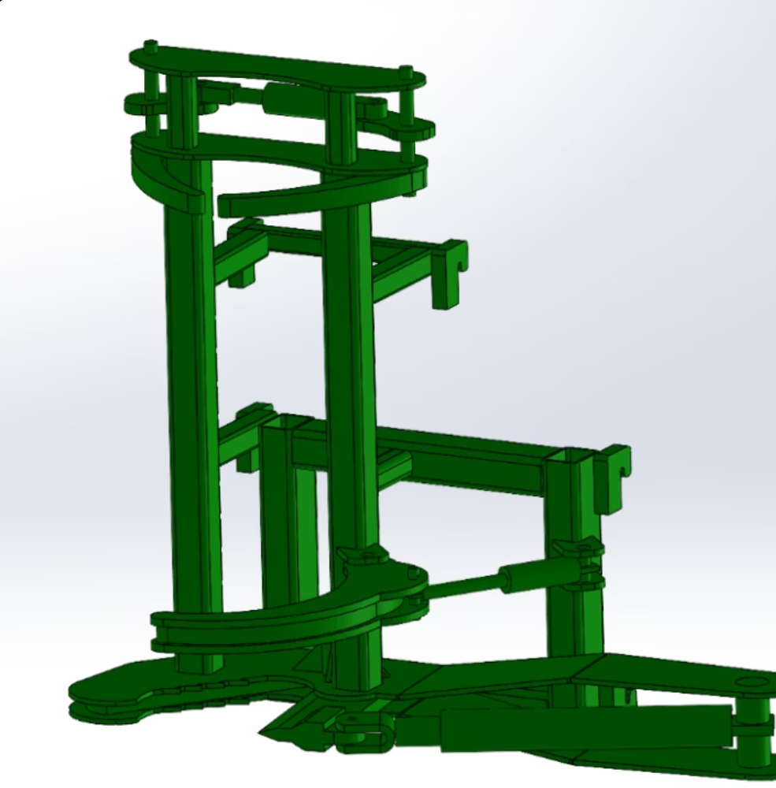
Led mechanical design of a hydraulic cutting attachment for a John Deere 512 front loader, contributing to a scissor mechanism actuated by four hydraulic pistons.
GO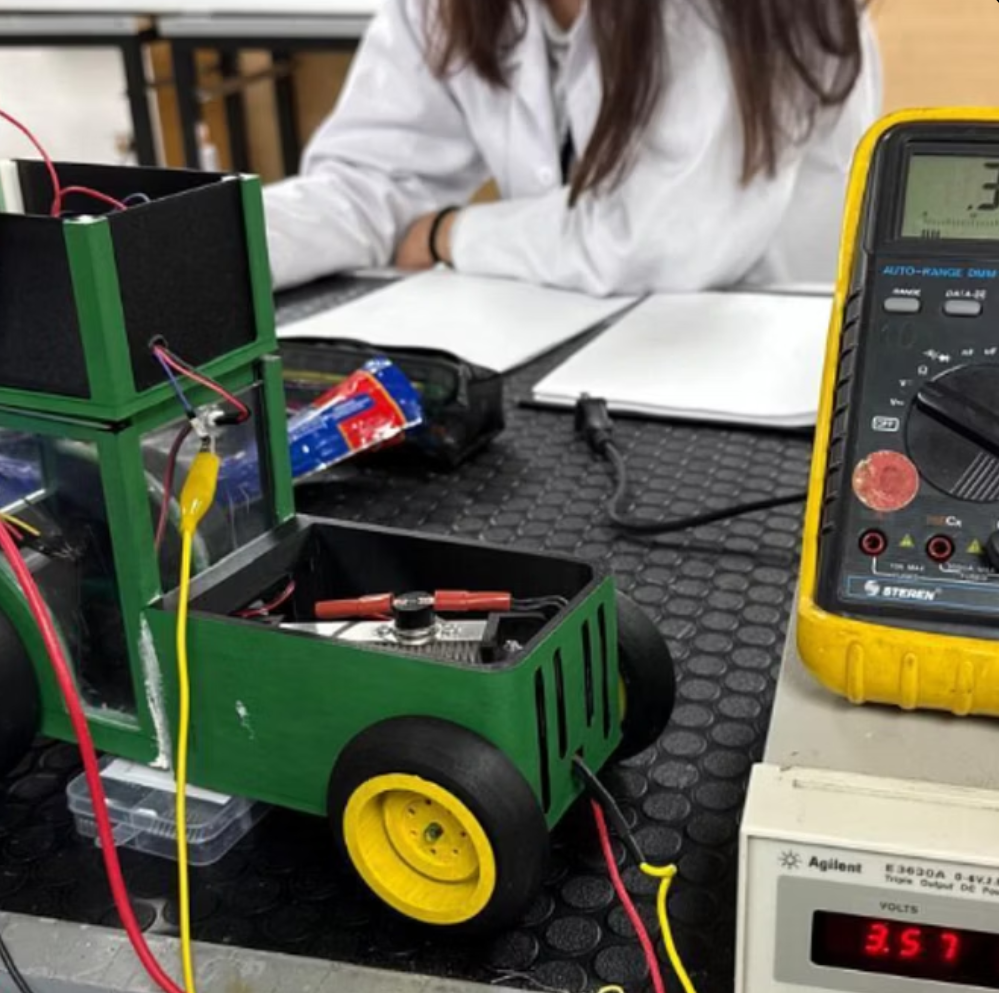
Contributed to designing, building, and evaluating a tractor cab climate system using engine heat, combining CAD, thermal simulation, and analog control circuits with operational amplifiers.
GOZittau, Germany
I am seeking an engineering internship in Germany starting in March 2027.